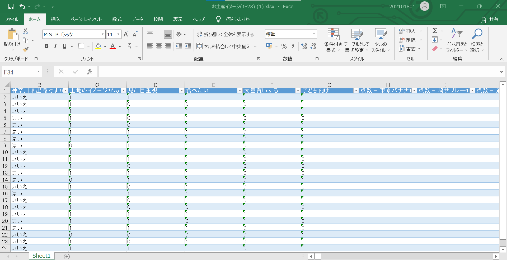

自分たちの調査について
アンケート:お土産品
（回答数）
→ 23
[内訳] 神奈川県出身者：10人 県外出身者：13人
（商品）
[神奈川県] → 鳩サブレ―・じゃがポックル・ハーバー・クルミっ子・湯河原の温泉饅頭
[他県] → 白い恋人・東京バナナ・通りもん・信玄餅・ピーナッツ最中・ういろう
きんつば・赤福餅・かるかん饅頭・大師巻・ガトーラスク・柿の種・水の色
（選択肢）
はいorいいえの2択
・土地のイメージがある ・見た目重視 ・食べたい ・大量買いする ・子供向け
・大人向け ・年齢関係ない ・食べたことがある ・お土産として買う ・和or洋
分析
(不具合の発生)
アンケート結果をExcelに変換したところ、
データがバラバラになるというバグ？が発生
原因は不明
しかし、おそらく、データが大きすぎるからではないかと考えている

結果
先ほど記載した通り、Excelがうまく機能しなかったことで
分析ができなかった